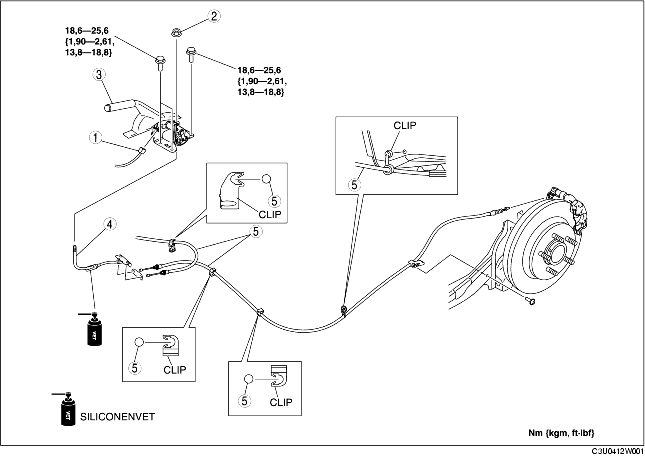

1. Verwijder de hoofddemper. (Zie VERWIJDEREN/PLAATSEN UITLAATSYSTEEM [ZJ, Z6].) (Zie VERWIJDEREN/PLAATSEN UITLAATSYSTEEM [LF].)
2. Verwijder het hitteschild.
3. Verwijder de middenconsole. (Zie VERWIJDEREN/PLAATSEN MIDDENCONSOLE.)
4. Verwijder de onderdelen in de aangegeven volgorde, zie de tabel.
5. Plaats de onderdelen in omgekeerde volgorde.
6. Controleer na het plaatsen de slag van de parkeerremhendel. (Zie CONTROLE PARKEERREMHENDEL.)

.
|
1
|
Stekker parkeerremschakelaar
|
|
2
|
Stelmoer
|
|
3
|
Parkeerremhendel
|
|
4
|
Parkeerremkabel voor
|
|
5
|
Parkeerremkabel achter
|
1. Plaats de parkeerremkabel achter op de aangegeven manier bij de bedrading van de wielsensor.
2. Plaats de parkeerremkabel achter.
1. Plaats de parkeerremkabel voor met het merkteken op het juk naar beneden gericht.